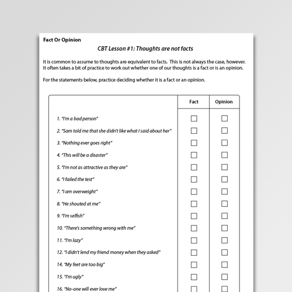
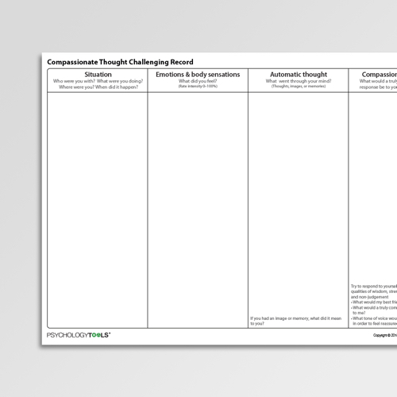
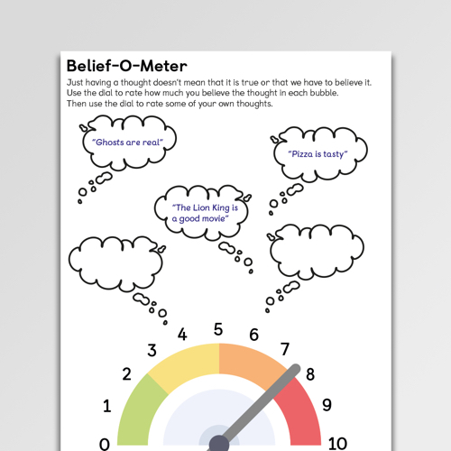
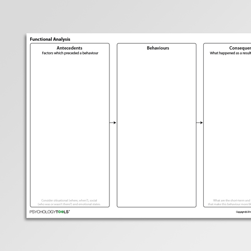
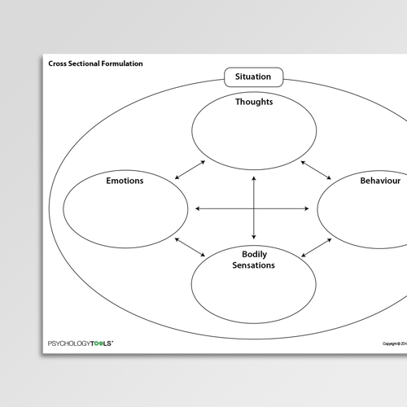

Much of the time we respond to our thought processes as if they reflect facts about the world, whereas they more often represent opinions or assumptions. Being able to tell the difference between facts and opinions is a critical skill in cognitive restructuring.
Thought challenging records are commonly used in CBT to help people to evaluate their negative automatic thoughts for accuracy and bias. This Compassionate Thought Challenging Record encourages cognitive restructuring from a compassionate perspective.
The Belief-O-Meter is an engaging way of helping children and adolescents to relate to their thoughts differently. It is a form of cognitive restructuring which encourages consideration of thoughts as an ‘object’ about which one can have an opinion.
Functional analysis examines the causes and consequences of behavior. This classic A-B-C Functional Analysis worksheet can be used to collect information about what came before a behavior (antecedents), the behavior itself, and the consequences of the behavior.
Case conceptualizations (formulations) helps to come to a shared understanding of a problem. This Cross Sectional Formulation explores the interactions between a situation, thoughts, emotions, body sensations and behaviors.
